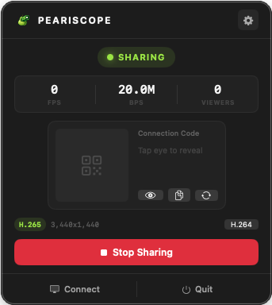
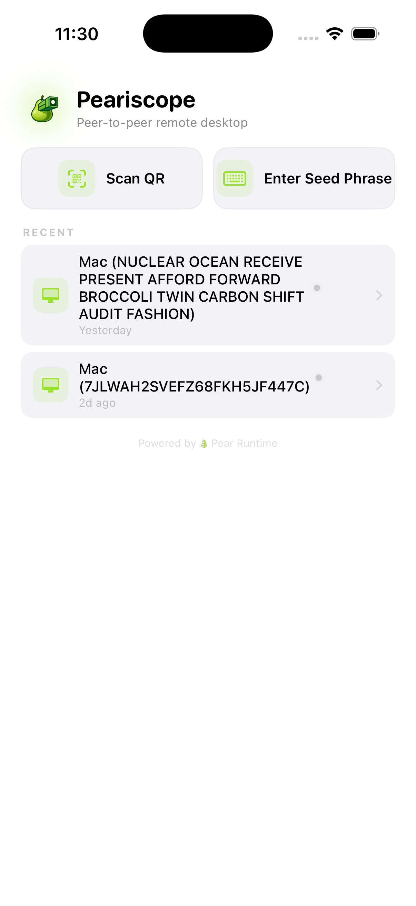

Peariscope Help Center
Everything you need to know about using Peariscope for remote desktop access.
Overview
Peariscope is a peer-to-peer remote desktop app. A host (macOS) shares their screen, and viewers (iOS, macOS) connect to see and control the desktop remotely.


Unlike traditional remote desktop tools, Peariscope has:
No servers
Devices connect directly to each other. Your screen data never passes through a third party.
No accounts
No sign-up, no email, no password. Just share a code and connect.
End-to-end encrypted
All traffic is encrypted with XChaCha20-Poly1305. Even the P2P relay nodes can't see your data.
Adaptive streaming
Video quality, resolution, and framerate adjust automatically based on your network conditions.
Set Up as Host (macOS)
The host is the computer whose screen will be shared. Currently only macOS is supported as a host.
The macOS menu bar popover while hosting
- Launch Peariscope — the app lives in your menu bar (top-right corner). Click the pear icon to open the popover.
- Grant permissions — on first launch, macOS will ask for Screen Recording and Accessibility permissions. Both are required. You can manage these in System Settings → Privacy & Security.
- Start hosting — click Start Hosting. The app will connect to the P2P network and generate a 12-word connection code.
- Share the code — give the 12 words to the person who wants to view your screen. You can read them aloud, send via a secure message, etc.
- Approve the viewer — when someone connects, a PIN popup appears. Read the PIN to the viewer so they can confirm the connection.
ⓘ
Your screen is only shared while you have the hosting session active. Click Stop Hosting to end the session at any time.
Connect from iOS
The iOS connect screen with recent connections
- Open Peariscope on your iPhone or iPad.
- Enter the connection code — type the 12 words from the host. Autocomplete will suggest words as you type — just enter the first 2-3 letters and tap the suggestion.
- Tap Connect — the app will search for the host on the P2P network. This usually takes 5-15 seconds.
- Enter the PIN — when the host's PIN popup appears, they'll tell you the PIN. Type it in and confirm.
- You're in — the host's desktop will appear. Use touch gestures to navigate (see Touch Controls).
✔
Tip: You don't need to type full words. The autocomplete only needs 2-3 characters to narrow down to the right BIP39 word.
Connect from Mac
- Open Peariscope and switch to Viewer mode from the menu bar popover.
- Enter the 12-word connection code.
- Enter the PIN when prompted.
- Use your keyboard and mouse to control the remote desktop. Press Esc or click the disconnect button to end the session.
Connection Codes
Peariscope uses BIP39 mnemonic phrases — the same standard used by cryptocurrency wallets — as connection codes.
| Format | 12 English words from a standardized 2,048-word list |
| Entropy | 132 bits — 5.4 × 1039 possible combinations |
| Example | abandon ability able about above absent absorb abstract absurd abuse access accident |
| Lifetime | One session — a new code is generated each time you start hosting |
The code is used to derive a topic hash that both devices use to find each other on the Hyperswarm distributed hash table. Anyone with the code can attempt to connect, which is why PIN verification exists as a second layer.
⚠
Treat connection codes like passwords. Don't post them publicly or send them over unencrypted channels. Anyone with the code can attempt to connect to your session.
PIN Verification
When a viewer connects, the host sees a PIN. The viewer must enter this same PIN to prove they're the intended recipient.
Why is this needed?
The connection code gets you to the right "room" on the P2P network, but it doesn't prove identity. The PIN is an out-of-band verification — the host reads it aloud or sends it through a separate channel, confirming the viewer is who they claim to be.
Brute force protection
- After 5 failed PIN attempts, the peer is locked out for 5 minutes
- Lockout is tracked per peer public key — switching devices won't bypass it
- A new PIN is generated for each connection attempt
Touch Controls (iOS)
Peariscope maps touch gestures to desktop mouse/keyboard actions:
| Gesture | Action | Details |
|---|
| Tap | Click | Moves cursor to tap position and performs a left-click |
| Long press | Drag | Hold to start dragging. Move finger while held. Lift to release. Haptic feedback confirms drag start. |
| Two-finger tap | Right-click | Equivalent to right-clicking at the current cursor position |
| Three-finger tap | Toggle toolbar | Shows/hides the disconnect button and status bar |
| Pinch | Zoom | Zoom from 1x (fit-to-screen) up to 5x magnification |
| Double tap | Toggle zoom mode | Switches between fit-to-screen and 1:1 pixel mapping |
| One-finger pan | Move cursor | In trackpad mode, moves the cursor relative to finger movement (like a laptop trackpad) |
Keyboard Input
iOS
Tap the keyboard icon in the toolbar to show the on-screen keyboard. All key presses — including special keys and shortcuts — are forwarded to the host.
Supported inputs:
- All standard characters (letters, numbers, symbols)
- Modifier keys: Shift, Control, Option/Alt, Command
- Special keys: Enter, Tab, Escape, Arrow keys, Delete/Backspace
- Keyboard shortcuts (e.g., Cmd+C to copy on the remote Mac)
macOS Viewer
When input capture is active, your keyboard and mouse are forwarded directly to the host. Toggle input capture with the button in the viewer toolbar.
Trackpad Mode
On iOS, trackpad mode is enabled by default. Instead of moving the cursor to where you tap, your finger acts like a laptop trackpad — the cursor moves relative to your finger movement.
This gives you much finer control, especially on large desktops viewed on a small phone screen. Single taps still click at the current cursor position.
Zoom & Pan
When viewing a large desktop (e.g., 3440x1440) on a small screen, you'll want to zoom in:
- Pinch to zoom from 1x to 5x
- Double-tap to toggle between fit-to-screen and 1:1 pixel mapping
- When zoomed in, the viewport follows the cursor automatically — as you move the cursor near the edge of the visible area, the viewport pans to keep up
Clipboard Sharing
Clipboard content syncs automatically between host and viewer in both directions.
| Feature | Details |
|---|
| Supported formats | Plain text and PNG images |
| Max text size | 1 MB |
| Max image size | 10 MB |
| Sync interval | 1 second (polling-based) |
| Direction | Bidirectional — host ↔ viewer |
Copy something on the host and paste on the viewer, or vice versa. There's a ~1 second delay due to polling.
Multiple Displays
If the host has multiple monitors, Peariscope captures one display at a time. The host can choose which display to share from the hosting interface. Multi-display switching from the viewer side is coming in a future update.
Audio Streaming
System audio from the host is streamed to the viewer alongside video. Audio uses AAC encoding at 48kHz stereo, 128kbps — high quality at low bandwidth.
Audio plays automatically when connected. There is no separate volume control yet — use your device volume.
Adaptive Quality
Peariscope continuously monitors network conditions and adjusts streaming parameters in real time:
| Metric | What it affects |
|---|
| Round-trip time (RTT) | Measured via ping/pong. High RTT triggers bitrate and resolution reduction. |
| Packet loss | Above 3% = moderate reduction. Above 10% = aggressive reduction. |
| Viewer throughput | If the viewer receives less than the host sends, bitrate is capped to match. |
| Jitter | High variance in frame arrival times triggers quality reduction. |
| Decode FPS | If the viewer's decoder can't keep up, the host reduces frame rate. |
Quality ramps down quickly (1 bad reading) and up gradually (3 consecutive good readings) to avoid oscillation.
H.264 vs H.265
Peariscope supports both codecs:
| H.264 | H.265 (HEVC) |
|---|
| Compression | Good | ~30-40% better at same quality |
| Compatibility | All devices | Most modern devices |
| CPU usage | Lower | Slightly higher decode |
| Best for | Compatibility, older devices | High-res desktops, bandwidth savings |
The host can toggle between codecs in the settings. If a viewer can't decode H.265, it automatically requests a fallback to H.264.
How P2P Works
Peariscope uses Hyperswarm for peer-to-peer connectivity:
- Discovery — the connection code is hashed into a "topic." Both host and viewer announce this topic on the Hyperswarm DHT (distributed hash table).
- Hole punching — Hyperswarm attempts direct UDP connections using various NAT traversal techniques.
- Relay fallback — if direct connection fails (strict NATs, firewalls), traffic routes through Hyperswarm relay nodes. Data is still end-to-end encrypted — relays can't read it.
- Encrypted stream — once connected, all data flows through a Secret Stream (Noise protocol + XChaCha20-Poly1305).
ⓘ
Connection times vary from 5-30 seconds depending on NAT types. Devices on the same local network connect fastest.
Security Deep Dive
Encryption
All data (video, audio, input, clipboard) is encrypted end-to-end using Hyperswarm's Secret Stream protocol:
- Key exchange: Noise XX handshake pattern
- Stream cipher: XChaCha20-Poly1305 (AEAD)
- Per-device keys: Each device generates a Curve25519 keypair stored in the OS keychain
What Peariscope does NOT see
- No account data (there are no accounts)
- No usage analytics or telemetry
- No connection metadata (the DHT is distributed, not centralized)
- No screen content (everything is encrypted device-to-device)
Trust model
| Connection code | Proves you were invited to the session (knowledge factor) |
| PIN verification | Proves you're the intended viewer (out-of-band confirmation) |
| Device key | Unique identity per device, stored in OS keychain |
Use wired ethernet
WiFi adds latency and jitter. A wired host connection dramatically improves responsiveness.
Stay on the same network
LAN connections bypass the internet entirely, giving the lowest possible latency.
Close bandwidth-heavy apps
Video calls, large downloads, and cloud sync compete for bandwidth.
Use H.265 for large screens
If both devices support it, H.265 uses ~35% less bandwidth at the same quality.
Remove phone case (iOS)
Continuous video decoding and Metal rendering generate heat. Better airflow helps sustain performance.
Keep iOS in foreground
iOS aggressively suspends background apps. Keep Peariscope on-screen for uninterrupted streaming.
Troubleshooting: Connection Issues
"Connecting..." stays on screen forever
The most common causes:
- Host isn't actively hosting — make sure the host has pressed "Start Hosting" and sees a connection code.
- Typo in connection code — double-check all 12 words. Use the autocomplete to avoid mistakes.
- Network issues — both devices need internet access. The DHT bootstrap can take 30-60 seconds on first launch.
- Strict firewall — some corporate/school networks block UDP traffic. Try a different network.
If it's still stuck after 60 seconds, disconnect and try a fresh connection code.
Connection drops frequently
Peariscope will auto-reconnect up to 5 times when a connection drops. If drops are frequent:
- Check WiFi signal strength on both ends
- Move closer to your router
- Avoid networks with captive portals (hotel, airport WiFi)
- If on cellular, switch to WiFi if possible
PIN entered correctly but nothing happens
After entering the PIN, the host must confirm acceptance. The viewer waits for the host's confirmation before showing video. If the host dismissed the popup or the PIN didn't match:
- Try disconnecting and reconnecting — a new PIN will be generated
- Make sure you're entering the PIN shown on the host's screen, not a previously used one
Troubleshooting: Video Issues
Black screen after connecting
The viewer needs a keyframe to start rendering. Keyframes are sent every 1 second and on connection, but occasionally the first one gets lost.
- Wait 3-5 seconds — another keyframe will arrive automatically
- If still black, disconnect and reconnect
Video is blurry
The host adapts capture resolution to match your screen size and network conditions. If the network is slow, resolution is temporarily reduced.
- Check your network speed — slow connections force lower resolution
- Wait for conditions to improve — quality ramps back up automatically
- Use H.265 if available — it delivers better quality at the same bitrate
Video has 1-2 second delay
Some latency is inherent in the capture → encode → network → decode → render pipeline. Typical latency is 100-300ms. If you're seeing 1-2 seconds:
- You may be going through a relay (not direct P2P) — this adds latency
- High jitter or packet loss causes buffering delays
- Both devices on the same LAN will give the best results
Can't type on iOS
The keyboard needs to be explicitly shown:
- Three-finger tap to show the toolbar
- Tap the keyboard icon to bring up the on-screen keyboard
- If the keyboard doesn't appear, tap the text field area and try again
Cursor position is slightly off
Touch-to-desktop coordinate mapping can be slightly off when the desktop aspect ratio differs significantly from the viewer's screen. This is a known issue being worked on. Using trackpad mode (relative movement) avoids this entirely.
Clicks aren't registering
Make sure the host has granted Accessibility permission to Peariscope. Without it, the app can't inject mouse/keyboard events. Check System Settings → Privacy & Security → Accessibility.
iPhone gets very hot
Continuous H.264/H.265 hardware decoding + Metal rendering is inherently power-intensive. To reduce heat:
- Remove your phone case for better heat dissipation
- Reduce session length — take breaks
- Avoid charging while streaming (adds heat)
- Keep the phone out of direct sunlight
Peariscope monitors thermal state and automatically reduces quality when the device gets hot.
App crashes or gets killed on iOS
iOS enforces strict memory limits (~2-3GB for foreground apps). Peariscope's V8 JavaScript runtime + video decoding can approach these limits on 4GB devices.
- Close other apps to free memory
- If crashes persist, the app will automatically attempt to reconnect on next open
- Crash logs are saved to the device and shown on next launch for diagnostics
High CPU usage on host Mac
Screen capture + hardware encoding typically uses 10-20% CPU. If usage is higher:
- Large desktop resolutions (e.g., 5K) require more encoding work — adaptive resolution will downscale for smaller viewers
- Multiple viewers multiply the encoding overhead
- H.265 uses slightly more CPU than H.264 for encoding
Peariscope is open source under GPL v3.
Found a bug? Report it on GitHub.